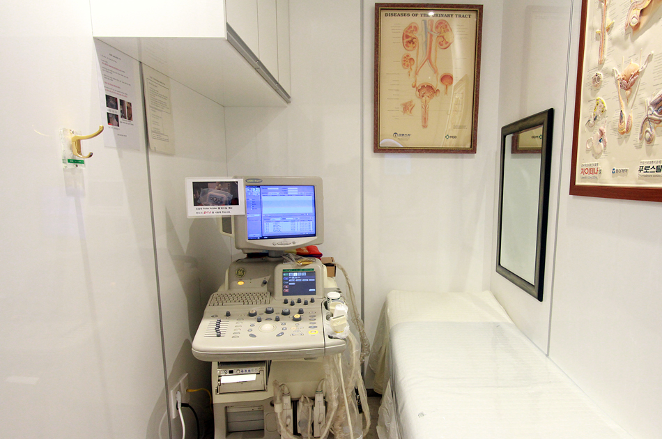
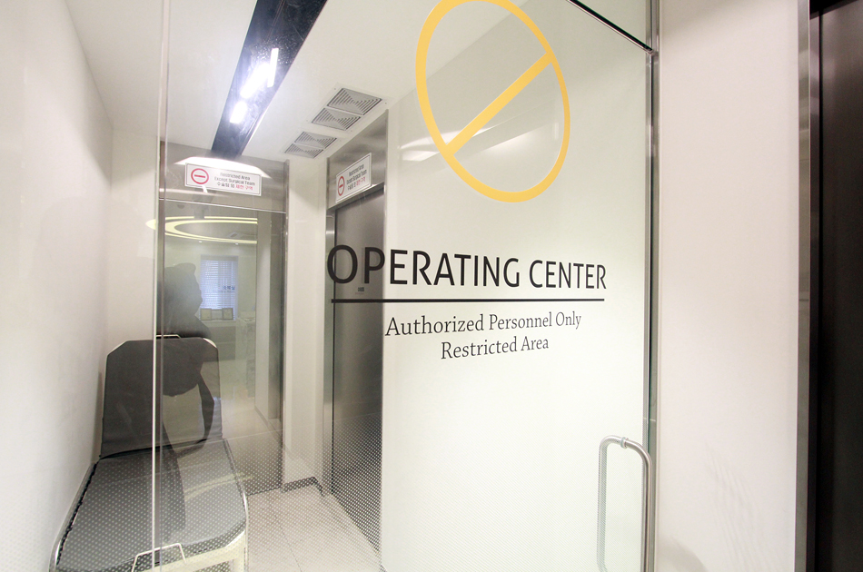

3S · No3 원칙 지향
Safe·Simple·Speed 3S Method를 바탕으로 통증·출혈·합병증 부담을 줄이는 정밀 수술과 회복을 지향합니다.


1999년 개원 이래 축적된 2인 비뇨의학과 전문의 협진과 요로결석 7종 첨단 장비, HoLEP · COMBI-OPERATION 집도 역량.
통증·출혈·합병증 부담을 줄이는 No3 원칙 지향과 실시간 생체 모니터링으로 안전한 회복을 돕습니다.
각 분야별 원인 분석, 수술 전 준비검사 및 단계별 치료 프로토콜을 전용 센터 페이지에서 확인하실 수 있습니다.

전립선비대증 HoLEP 홀뮴레이저 적출술, 유로리프트(Urolift) 결찰술, 전립선염·암·통증 정밀 진료

체외충격파쇄석술(ESWL)과 요관내시경(URS·RIRS) 등 요로결석 전용 첨단 장비 7종 원스톱 치료

AMS Spectra 굴곡형·3-Piece 팽창형 보형물 삽입술 및 전립선 HoLEP 동시 수술(COMBI-OPERATION)

SGA 귀두·NPA 음경확대, 음경만곡증 교정, 바세린 등 이물질 제거, 성기능검사·정관·포경수술
진단의 정확도와 수술의 안전성을 높이는 전용 장비와 독립된 검사·진료 환경을 갖추고 있습니다.


Safe · Simple · Speed의 3S 원칙과 통증·출혈·합병증 부담을 줄이는 No3 원칙 지향으로 안전한 수술 환경을 유지합니다.
Safe·Simple·Speed 3S Method를 바탕으로 통증·출혈·합병증 부담을 줄이는 정밀 수술과 회복을 지향합니다.
최소 국소 신경마취와 함께 맥박·산소포화도·혈압·호흡수 실시간 생체 활력증후 모니터링을 시행합니다.
수술 중 음악요법(IOM)을 적용하며, 베테랑 정식 간호사 출신 3인 수술팀이 일관된 프로토콜로 협진합니다.
자체 설계·제작 첨단 소독기계 및 자외선 소독기, 원장이 직접 고안한 수술기구로 멸균 환경을 관리합니다.
1999년부터 이어온 박천진 대표원장의 임상 경험과 세브란스 교수 출신 이웅희 원장의 협진 체제로 진료합니다.
의료진 · 병원소개 상세 →
비뇨의학과 전문의 · 강남J비뇨기과 대표원장

비뇨의학과 전문의 · 연세의대 의학박사 (2026.08.21 진료 개시)
| 의료진 | 구분 | 월 | 화 | 수 | 목 | 금 | 토 |
|---|---|---|---|---|---|---|---|
| 이웅희 전문의 |
오전 | 진료 | 진료 | 진료 | 휴진 | 진료 | 진료 |
| 오후 | 진료 | 진료 | 진료 | 휴진 | 진료 | - | |
| 박천진 대표원장 |
오전 | 수술/진료 | 수술/진료 | 수술/진료 | 수술/진료 | 수술/진료 | 진료 |
| 오후 | 휴진 | 진료 | 진료 | 휴진 | 진료 | - |
강남J비뇨기과는 사전 예약진료로 운영되고 있어, 예약 없이 방문하실 경우 대기시간이 발생하거나 당일 진료가 어려울 수 있습니다. 가급적 02-3018-7575로 사전 예약 후 내원해 주시면 감사하겠습니다.